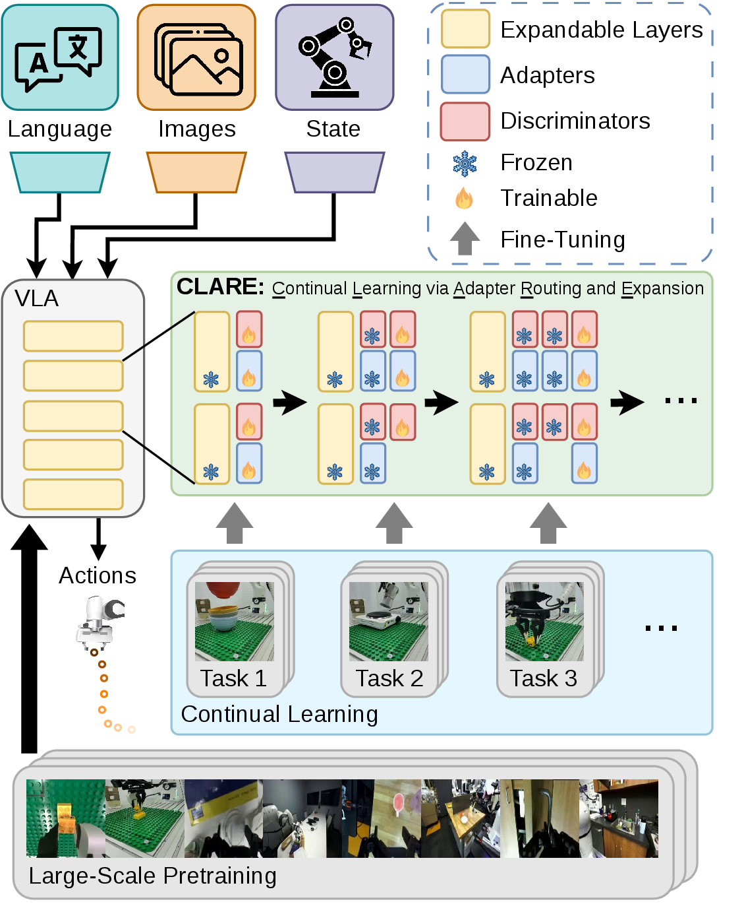
Abstract
To teach robots complex manipulation tasks, it is now a common practice to fine-tune a pre-trained vision-language-action model (VLA) on task-specific data. However, since this recipe updates existing representations, it is unsuitable for long-term operation in the real world, where robots must continually adapt to new tasks and environments while retaining the knowledge they have already acquired. Existing continual learning methods for robotics commonly require storing previous data (exemplars), struggle with long task sequences, or rely on task identifiers for deployment. To address these limitations, we propose CLARE, a general, parameter-efficient framework for non-exemplar continual learning with VLAs. CLARE introduces lightweight modular adapters into selected feedforward layers and autonomously expands the model only where necessary when learning a new task, guided by layer-wise feature similarity. During deployment, an autoencoder-based routing mechanism dynamically activates the most relevant adapters without requiring task labels. Through extensive experiments on the LIBERO benchmark and five real-world tasks, we show that CLARE achieves high performance on new tasks without catastrophic forgetting of earlier tasks, significantly outperforming even exemplar-based methods.
Motivation
Deploying robots in dynamic real-world environments — such as homes or hospitals — requires them to continuously acquire new skills without losing previously learned capabilities. Standard fine-tuning of VLAs leads to catastrophic forgetting, where new training overwrites critical prior knowledge. Storing past data for experience replay is often impractical due to privacy or storage constraints. Furthermore, robots operating autonomously rarely have access to explicit task identifiers to tell them which skill to use. CLARE addresses all three challenges: no forgetting, no stored exemplars, no task labels.
Method
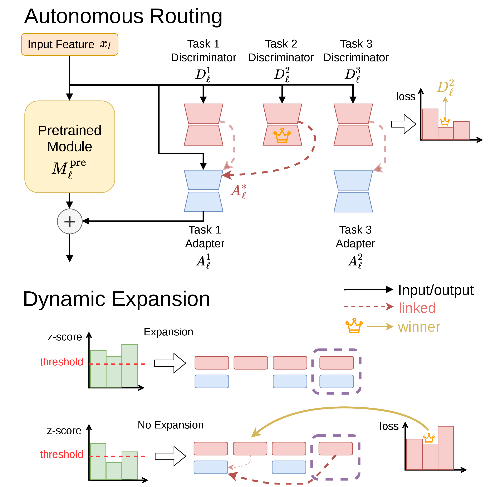
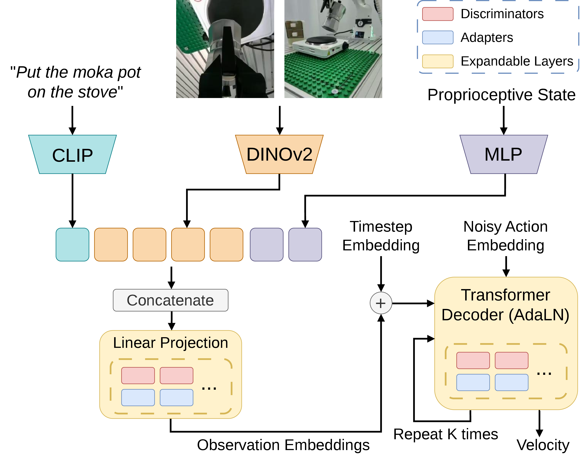
CLARE injects lightweight, trainable adapters into selected modules in the observation conditioning pathway of a frozen, pre-trained VLA. A dynamic expansion strategy monitors layer-wise feature statistics and only adds new adapter parameters when the incoming task data is sufficiently novel, preventing unnecessary capacity growth (~2% parameter increase per task in our experiments). During deployment, an autonomous routing mechanism uses autoencoder-based discriminators to analyze input features and activate the most relevant adapter without requiring task labels. This allows the robot to seamlessly switch between skills — even mid-execution — based purely on what it observes.
Real-World Experiments
We validate CLARE across five sequentially learned manipulation tasks, designed to cover a wide range of physical challenges: varying object weights (from 7 g Lego blocks to a 0.5 kg Moka pot), distinct interaction dynamics (contact-rich insertion, leveraging friction to straighten an angled pot), nonlinear friction profiles (plastic drawer), and multi-stage behavior with autonomous switching (pick, insert, close).
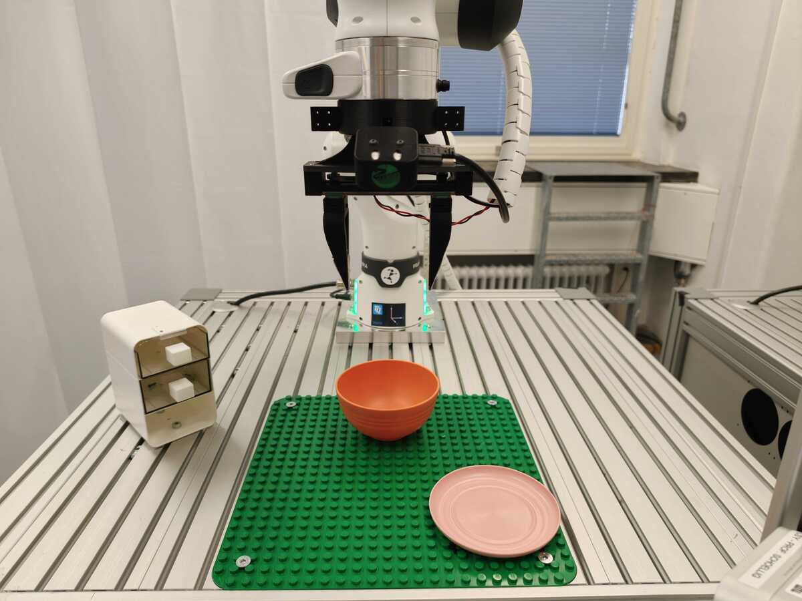
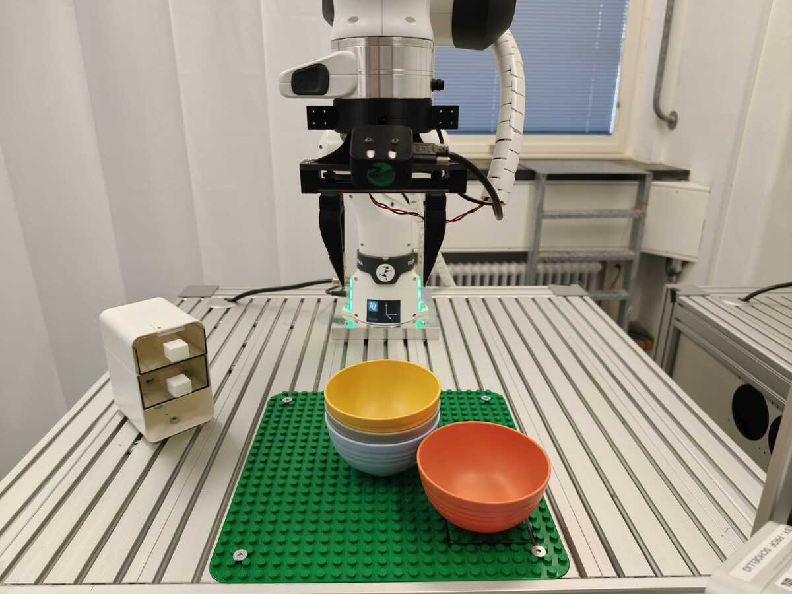
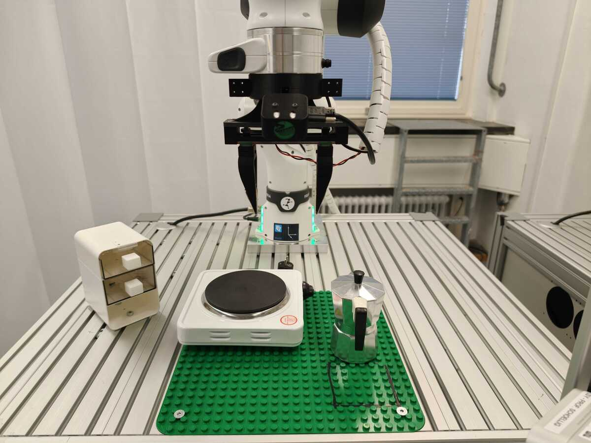
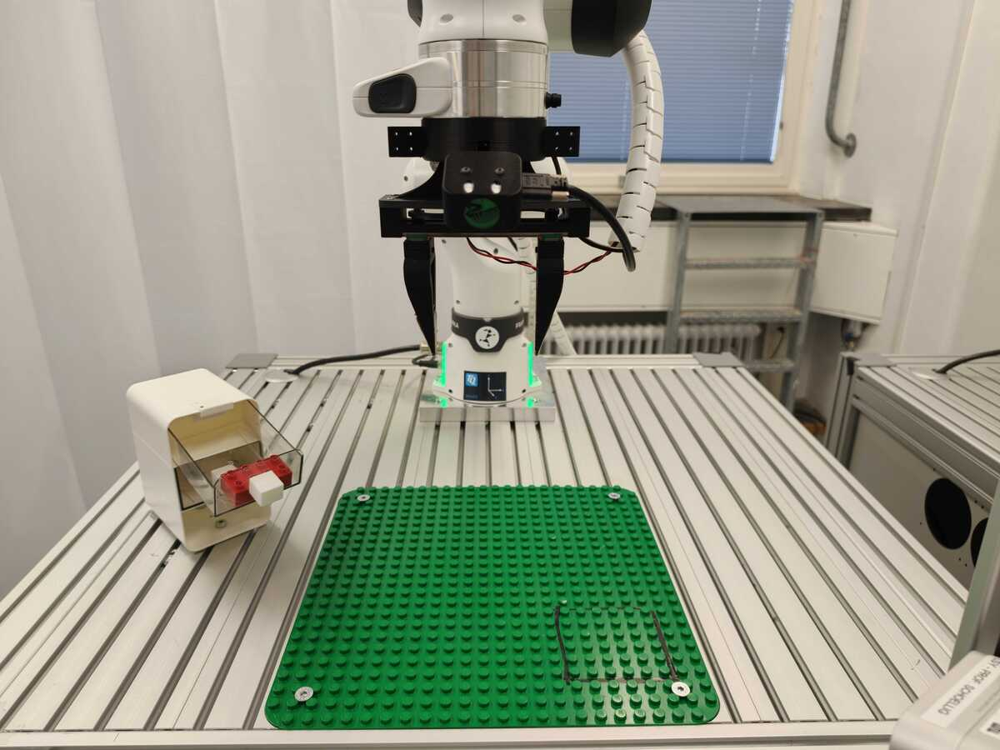
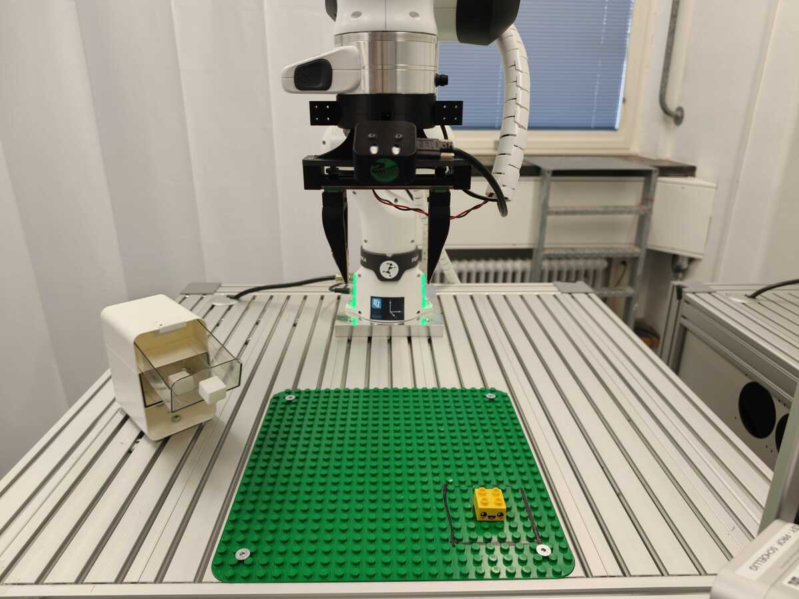
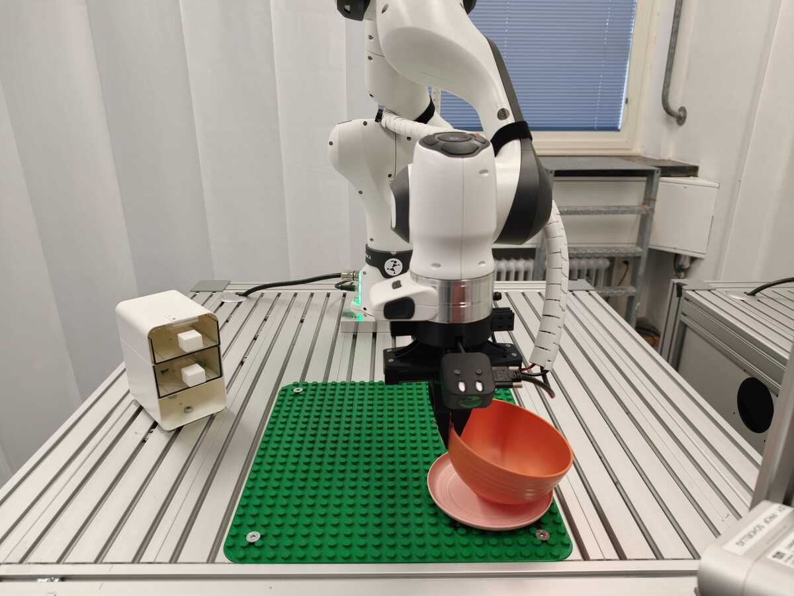
T1: Bowl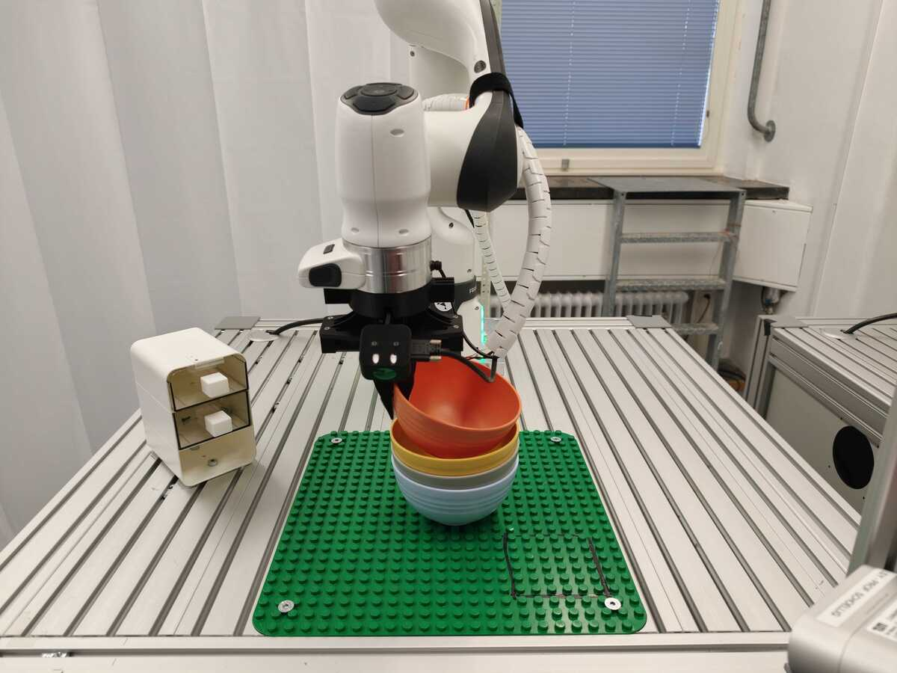
T2: Stack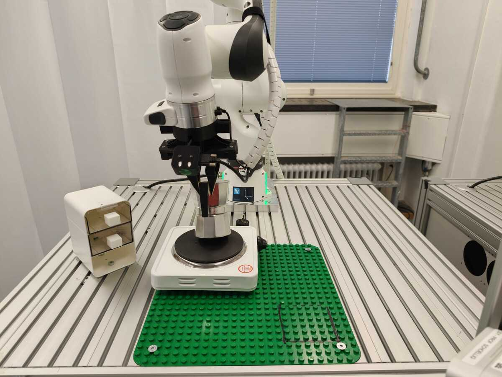
T3: Moka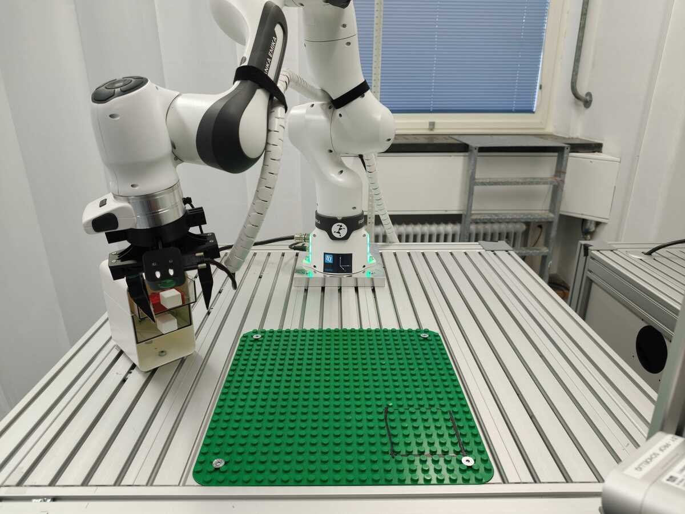
T4: Drawer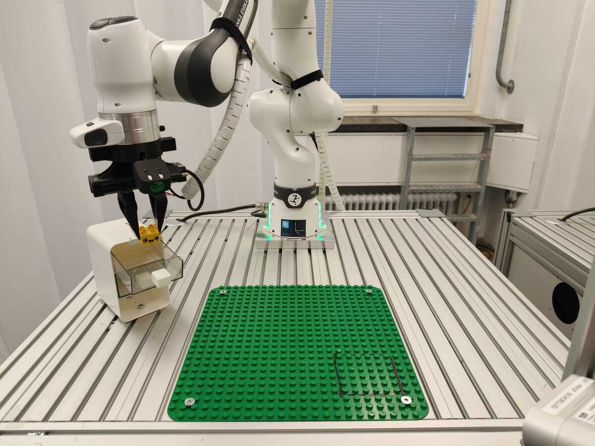
T5: LegoStart (top) and goal (bottom) states for each task.
| Method | AUC ↑ | FWT ↑ | NBT ↓ |
|---|---|---|---|
| SeqFFT | 23.8 | 68.0 | 80.0 |
| SeqLoRA | 22.9 | 64.0 | 76.9 |
| ER | 51.1 | 60.0 | 17.1 |
| CLARE (ours) | 63.3 | 62.0 | −2.9 |
Table IV: Overall results in our hardware experiments. Bold: best.
CLARE achieves the highest overall AUC and zero forgetting across all five tasks, significantly outperforming SeqFFT, SeqLoRA, and experience replay (ER). Notably, CLARE is the only method that completely avoids catastrophic forgetting. The routing mechanism remains robust to real-world sensory noise, lighting variation, and camera drift, consistently activating the correct adapter for each new observation. CLARE also demonstrates autonomous mid-task switching: when the language command changes from "put the Lego block into the drawer" to "close the drawer", the robot correctly adapts its behavior within a single execution without any manual intervention.
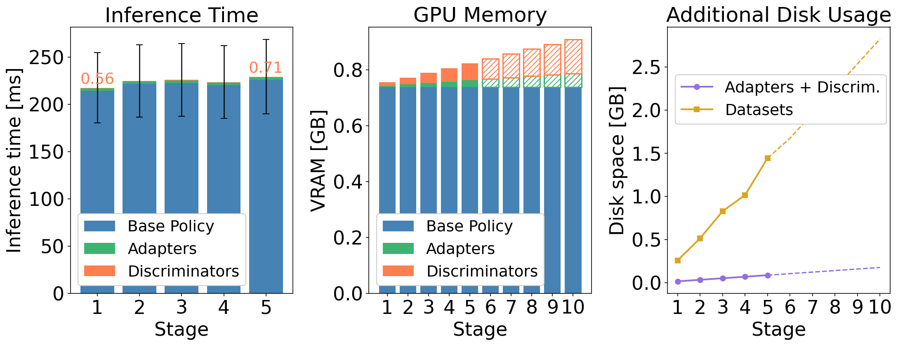
Simulation Results
We evaluate CLARE on the LIBERO benchmark across three suites: LIBERO-Long (complex long-horizon tasks), LIBERO-Goal (varying task goals), and LIBERO-Spatial (varying object placements), each with 10 sequentially arriving tasks. CLARE achieves the highest AUC on all three suites, outperforming the best baseline (ER) by 10–14 percentage points, while maintaining zero forgetting (NBT ≈ 0) — without storing any previous data.
| Method | LIBERO-Long | LIBERO-Goal | LIBERO-Spatial | ||||||
|---|---|---|---|---|---|---|---|---|---|
| AUC ↑ | FWT ↑ | NBT ↓ | AUC ↑ | FWT ↑ | NBT ↓ | AUC ↑ | FWT ↑ | NBT ↓ | |
| SeqFFT | 22.4 | 76.1 | 74.7 | 26.7 | 94.1 | 95.3 | 27.7 | 94.7 | 94.6 |
| SeqLoRA | 21.4 | 73.1 | 71.6 | 26.1 | 90.1 | 90.8 | 27.3 | 90.1 | 89.2 |
| PackNet | 4.8 | 37.2 | 41.3 | 10.5 | 60.3 | 67.0 | 8.6 | 54.7 | 60.3 |
| ER | 60.5 | 76.6 | 22.7 | 76.0 | 94.4 | 25.1 | 77.6 | 92.7 | 20.9 |
| LOTUS | 52.9 | 58.1 | −7.2 | 56.0 | 61.0 | 30.0 | NA | NA | NA |
| DMPEL | 58 | 55 | 7 | 78 | 68 | 0 | 70 | 64 | 3 |
| MLR | NA | NA | NA | 77.2 | 80.0 | 6.9 | NA | NA | NA |
| CLARE (ours) | 75.1 | 75.0 | 1.9 | 89.3 | 89.7 | 0.3 | 87.4 | 88.0 | 0.9 |
Table III: Baseline comparison across three LIBERO suites. Bold: best. Underline: second best.
To assess long-term scalability, we created LIBERO-40: a new suite of 40 tasks drawn from all four LIBERO suites (Long -> Goal -> Spatial -> Object). As shown below, CLARE successfully learns and retains all 40 tasks, whereas experience replay — despite having access to past data — exhibits significant performance degradation after just a few stages.
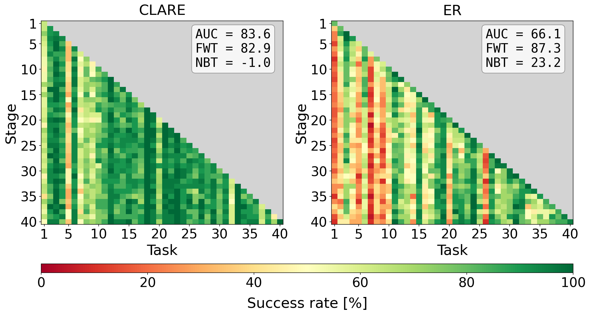
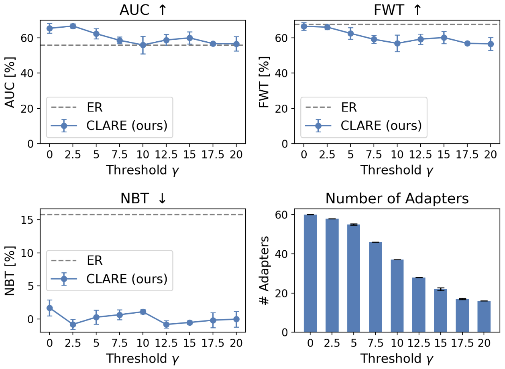
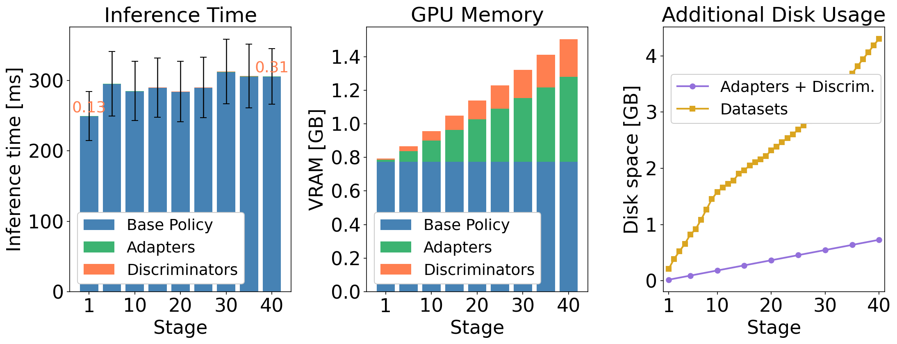
Highlights
- Real-world validated: Tested on five physically diverse manipulation tasks. CLARE achieves AUC = 63.3% and zero forgetting (NBT = 2.9%), outperforming all baselines including experience replay.
- Non-exemplar learning: Sequentially learns new skills without storing or replaying past data, respecting privacy and storage constraints.
- Autonomous adapter routing: Selects the correct task-specific module during inference based on feature similarity — no task IDs needed, even when switching tasks mid-execution.
- Dynamic expansion: Adds new parameters only when necessary, achieving ~2% parameter growth per task with negligible (<3 ms) routing overhead.
- Scales to 40 tasks: On LIBERO-40, CLARE retains all previously learned skills while ER exhibits catastrophic forgetting.
- Outperforms exemplar-based methods: Achieves higher AUC than ER across all benchmarks, without access to any previous data.
BibTeX
@article{clare2025,
title={CLARE: Continual Learning for Vision-Language-Action Models via Autonomous Adapter Routing and Expansion},
author={Ralf R{\"o}mer and Yi Zhang and Yuming Li and Angela P. Schoellig},
journal={arXiv preprint arXiv:2601.09512},
year={2026}
}